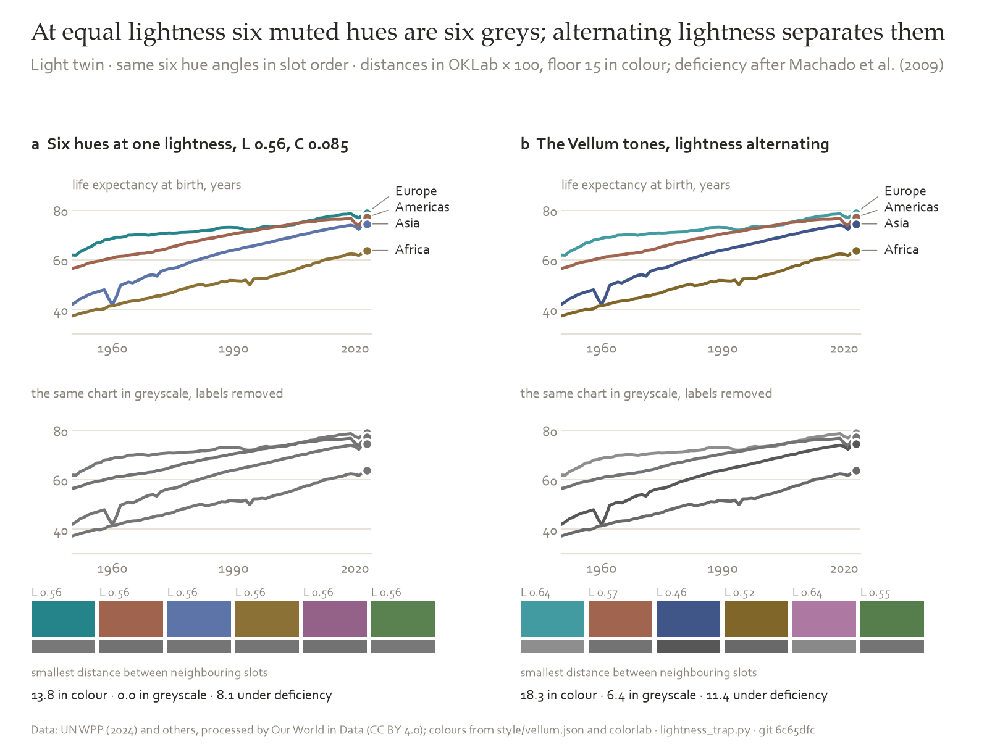
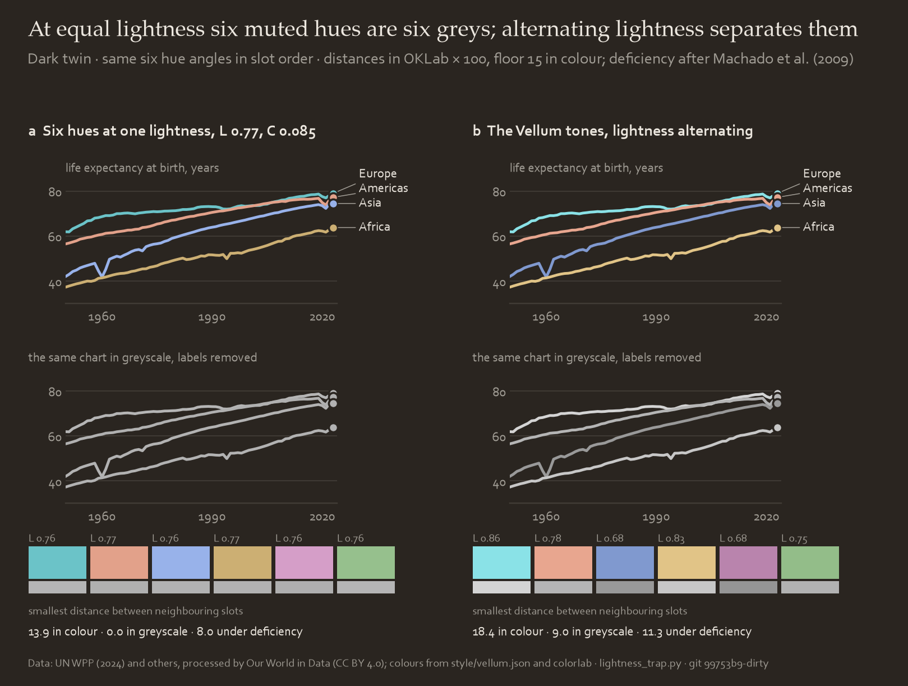
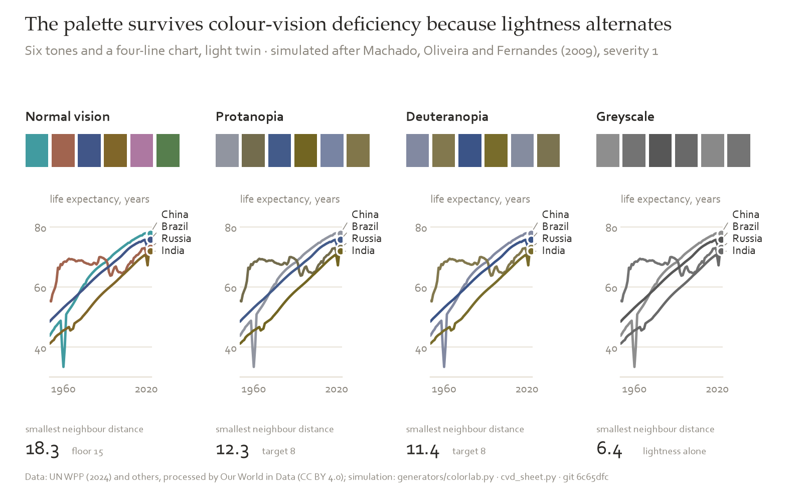
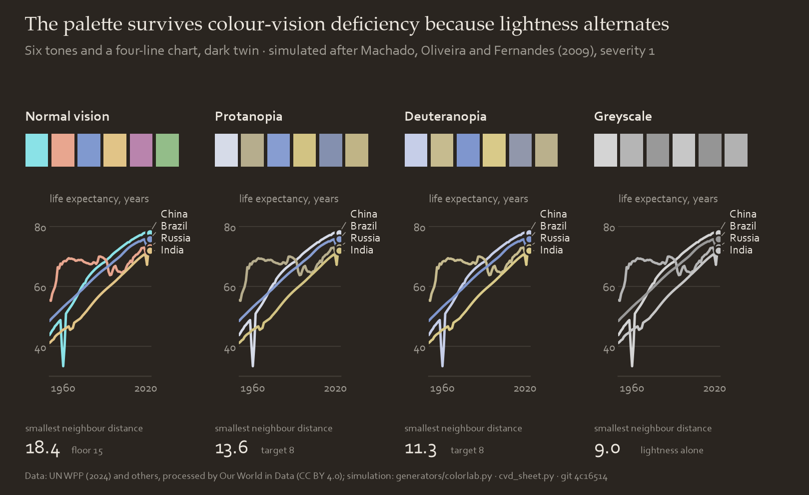
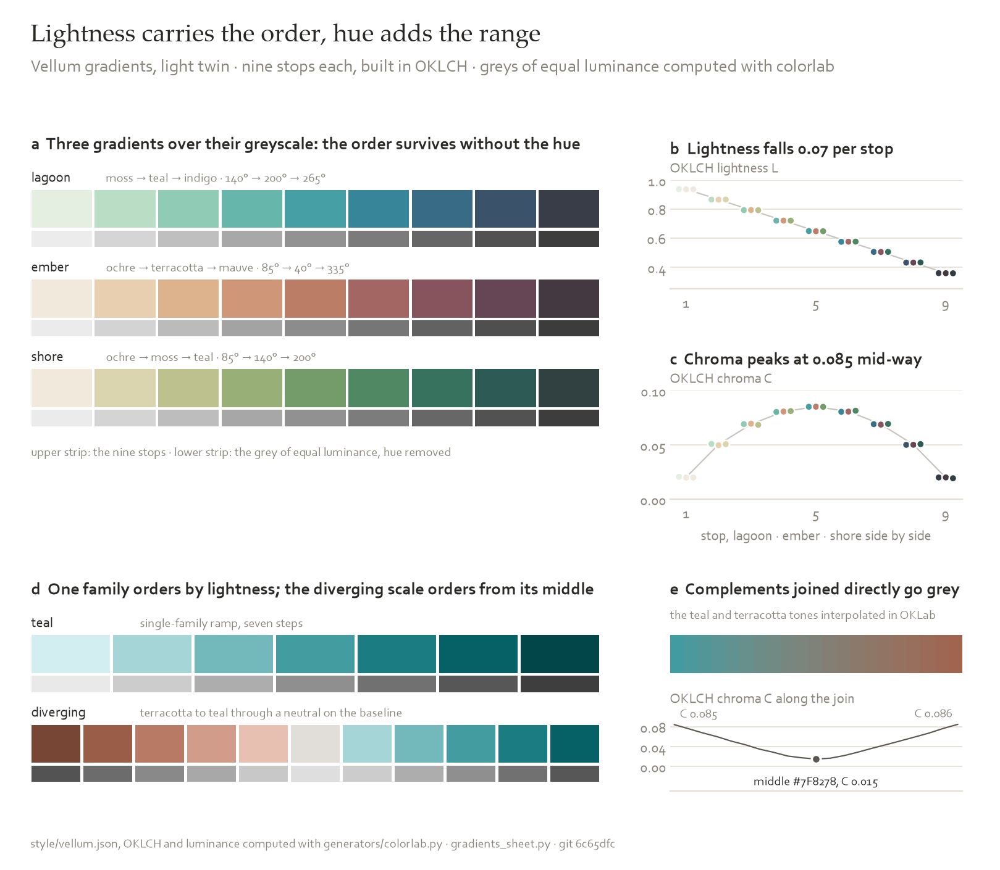
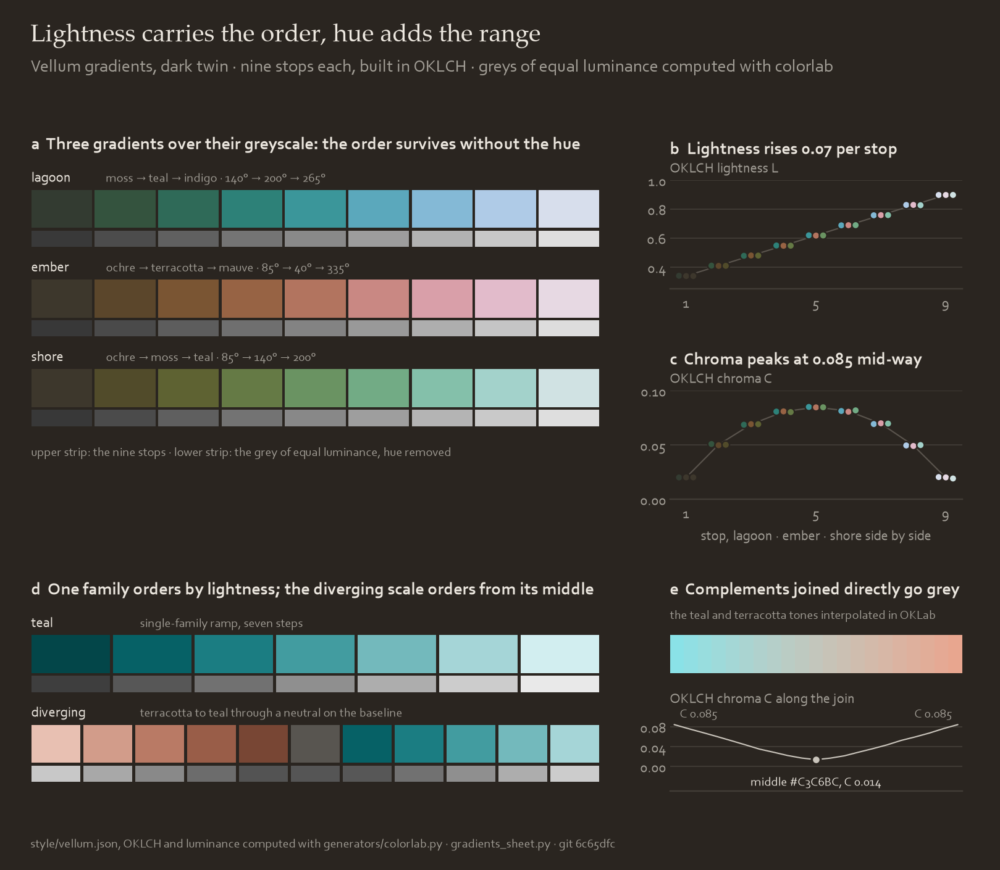

Colour
Each colour is defined in OKLCH, chosen by a rule and verified by a computed check.
Palette
Each colour has a job; use it only for that job. Click a swatch to copy its hex. Values follow the light or dark theme.
Neutrals
White and six warm greys on hue 80, chroma about 0.01.
| role | light | dark | job |
|---|---|---|---|
| surface | #FFFFFF | #2A2520 | the page or figure background |
| card | #FAF6EE | #342F2A | a panel, a box, a stat tile, a table stripe (the cream) |
| grid | #E6E0D4 | #413C36 | gridlines, the bottom axis line, a colour bar edge |
| rule | #C7C3BD | #5A544D | identity line, greyed-out series, leader lines |
| muted | #8A857C | #A29E96 | ticks, unit line, axis labels, footer, quiet notes |
| secondary | #5A5650 | #C9C4BB | body text in a report, error bars, arrows |
| ink | #2A2825 | #ECE7DF | titles, claims, direct labels, text that must be read |
Six families
Rows are in slot order: series one is teal, series two terracotta, and so on. The dark twin keeps the hue angles, with lighter tones, darker tints and near-white deeps.
| slot | family | hue | tone | tint | deep | dark tone | dark tint | dark deep |
|---|---|---|---|---|---|---|---|---|
| 1 | teal | 200° | #419BA0 | #A5D5D7 | #004C50 | #8AE2E7 | #3F6C6E | #BFEFF2 |
| 2 | terracotta | 40° | #A1644F | #E8C0B2 | #613425 | #E8A68F | #7D5A4E | #FFDCD0 |
| 3 | indigo | 265° | #415688 | #BBCBEC | #304168 | #8099CF | #556380 | #D8E5FF |
| 4 | ochre | 85° | #806629 | #DAC9A6 | #533F0D | #E1C487 | #706142 | #F4E3BF |
| 5 | mauve | 335° | #AD78A1 | #E0BFD8 | #593351 | #B984AD | #76596F | #FBD9F2 |
| 6 | moss | 140° | #567E4D | #BAD3B4 | #2D4B27 | #93BD89 | #546B4F | #D4EDCE |
Perceptual space
sRGB and HSL do not match perceived lightness: at the same HSL lightness, yellow looks lighter than blue.
OKLCH (Björn Ottosson, 2020) is built so that equal steps look equal. L is lightness (0 black, 1 white), C chroma (0 grey upward), H hue angle in degrees. Every colour is defined as (L, C, H) and converted to hex at the end. Distances are ΔE: Euclidean distance in OKLab × 100.
Conversion, colour-vision simulation and contrast: generators/colorlab.py (about 100 lines of NumPy). The web port, vellum-web.js, gives the same numbers.
Why not HSL
HSL and HSV are rotations of the RGB cube, so equal steps are not perceptually equal. Gradients interpolated in HSL pass through unintended hues.
Tint, tone, deep
Each family keeps one hue angle and varies L and C in three steps.
- Tint, for area: bands, fills, cell backgrounds. Low chroma, lightness near the surface.
- Tone, for line: curves, dots, bars. Enough contrast for thin marks.
- Deep, for emphasis and for text on a tint (about 6:1).
A tint on white is about 1.6:1, so it is not used for lines or labels.
| step | light L | light C | dark L | dark C | job |
|---|---|---|---|---|---|
| tint | 0.84 | 0.05 | 0.50 | 0.05 | area |
| tone | 0.46–0.64 | 0.085 | 0.68–0.86 | 0.085 | line, dot, bar |
| deep | 0.38 | 0.07 | 0.92 | 0.05 | emphasis, text on tint |
Hues
Numbers are the slot order. The dotted chords join the complement pairs. The dots take the current twin's tones.
Six hues about 60° apart: teal 200°, terracotta 40°, indigo 265°, ochre 85°, mauve 335°, moss 140°. Each has its complement in the set: teal–terracotta, indigo–ochre, mauve–moss. The pairs supply the diverging scale and the warm highlight without extra colours.
At chroma 0.085 the hues resemble earth pigments, hence the names.
The slot order alternates cool and warm, dark and light, so neighbouring series differ in hue, warmth and lightness.
Lightness
Two colours at equal L and C, 60° apart, differ by 2C·sin(30°) = C in OKLab. At C = 0.085 that is 8.5, below the floor of 15 for neighbouring series. Hue alone cannot separate muted colours.
So tone lightness alternates between slots. It was searched within 0.46–0.64 (white page) and 0.68–0.86 (charcoal) to maximise the smallest neighbour distance. The search, build_palettes.py, is seeded and reproduces palettes.json exactly.




Colour-vision deficiency
About 8 % of men have weak red–green discrimination. Simulation: Machado, Oliveira and Fernandes (2009), severity 1.0, in linear RGB, distances in OKLab. Target: 8 or more between neighbouring series; 6 is allowed only with labels.
Alternating warm and cool, and light and dark, gives 11.4 (light twin) and 11.3 (dark).
Colour is not the only identifier. End labels, plus a legend above four series, are required.




Live comparison with a common saturated default:
Contrast
WCAG 2.1: marks 3:1, body text 4.5:1, large text 3:1, from relative luminance.
Muted (3.67:1 on white) is only for the unit line, ticks and footer. Text read at body size is ink or secondary.
Tones were searched against the cream card, the harder case (lightest tone 3.03:1); on white all clear 3.27:1.
| twin | colour | value | contrast |
|---|---|---|---|
| light | ink | #2A2825 | 14.70:1 |
| light | secondary | #5A5650 | 7.29:1 |
| light | muted | #8A857C | 3.67:1 |
| light | lowest tone (teal) | #419BA0 | 3.27:1 |
| light | a tint (teal) | #A5D5D7 | 1.60:1 |
| light | deep on its tint, lowest (moss) | #2D4B27 | 6.08:1 |
| dark | ink | #ECE7DF | 12.33:1 |
| dark | secondary | #C9C4BB | 8.74:1 |
| dark | muted | #A29E96 | 5.68:1 |
| dark | lowest tone (mauve) | #B984AD | 5.03:1 |
| dark | a tint (teal) | #3F6C6E | 2.59:1 |
| dark | deep on its tint, lowest (moss) | #D4EDCE | 4.68:1 |
Scales
Sequential: one family in seven steps, lightness falling evenly, chroma peaking in the middle. For magnitude only. Prepend the surface as step zero if the lowest value should vanish. Default teal; a second map on the page uses terracotta. One ramp per panel.
Diverging: terracotta below the baseline, teal above, through a grey midpoint. The midpoint sits at the baseline value, not the centre of the data range.
Rainbow: not used. Its lightness is not monotone, so it has no readable order.
| family | 1 | 2 | 3 | 4 | 5 | 6 | 7 |
|---|---|---|---|---|---|---|---|
| teal | #D2EEF0 | #A5D5D7 | #73B9BC | #429CA0 | #1B7D82 | #066166 | #034649 |
| terracotta | #FBE2D9 | #E8C0B2 | #D29C8A | #B97A65 | #995D48 | #784634 | #583224 |
| indigo | #DEE8FD | #BBCBEC | #95ABD8 | #738BC0 | #566DA0 | #41547F | #2E3C5D |
| ochre | #F1E7D2 | #DAC9A6 | #BFA878 | #A4884D | #856B2F | #68521E | #4C3A13 |
| mauve | #F5E1F0 | #E0BFD8 | #C79BBD | #AD78A1 | #8D5B82 | #6F4566 | #50314A |
| moss | #DEEDDA | #BAD3B4 | #94B68C | #709967 | #537B4B | #3E5F37 | #2C4526 |
Diverging, eleven steps: terracotta below the baseline, teal above, the neutral #E1DDD8 on the baseline.
Status colours
Good, warning, serious and critical are a separate, saturated set. They are used only on small marks with an icon and a word, never as series colours, and sit at least 7.4 from every tone (light twin).
Warning is 2.0:1 on white, so it always carries a label.
| state | light | on white | dark | on charcoal |
|---|---|---|---|---|
| good | #007835 | 5.62:1 | #5FC27A | 6.85:1 |
| warning | #DAB327 | 2.01:1 | #DAB327 | 7.56:1 |
| serious | #CA6719 | 3.84:1 | #F08A3C | 6.07:1 |
| critical | #B02A2D | 6.53:1 | #F06B6B | 5.07:1 |
Gradients
Gradients are used only for data. Three multi-hue gradients extend the ramps when more range is needed: lagoon (moss, teal, indigo) for general magnitude, ember (ochre, terracotta, mauve) for warm magnitudes such as risk, shore (ochre, moss, teal) for a second map alongside lagoon.
lagoon
hues 140° → 200° → 265° · lightness 0.94 → 0.36general magnitude with more range than one family: moss to teal to indigo
#E4EFE2 #BADEC5 #8FCBB5 #66B6AC #459FA4 #378598 #386C86 #3A536B #383D48
ember
hues 85° → 40° → -25° · lightness 0.94 → 0.36warm magnitude, a heat or a risk: ochre to terracotta to mauve
#F1EADC #E8CFB0 #DDB38E #CF9777 #BC7D67 #A46662 #87545D #664554 #443941
shore
hues 85° → 140° → 200° · lightness 0.94 → 0.36neutral-warm to cool magnitude: ochre to moss to teal
#F1EADC #DBD5AF #BCC18E #98AF77 #739C6A #508864 #37725F #2D5A54 #314041
Lightness
Nine stops, L 0.94 to 0.36 in equal steps of about 0.07. Monotone lightness keeps the order readable in greyscale and under colour-vision deficiency; the generator asserts it.
Chroma
0.02 at both ends, 0.085 in the middle (sine to the power 0.8). The peak matches the tones.
Hue range
At most 125°, so the path never reaches a complement and passes through grey. No gradient runs red against green.




Complements are for diverging scales only
Teal #419BA0 to terracotta #A1644F, both at chroma 0.085, has a middle of #718078 (C 0.021) in RGB and #7F8278 (C 0.015) in OKLab. Opposite hues cancel to grey in any space.
The diverging scale puts a designed neutral, #E1DDD8, at that point. Used for magnitude, the grey middle would read as zero or missing.
Allowed uses of a gradient
- A continuous scale: heat map, surface, choropleth, scatter coloured by a third variable.
- Its legend bar.
- An open interval: a fade to the surface where a projection is not covered.
- Order along a line: a trajectory coloured by time.
Scales and two counterexamples:
Cells, gaps and missing values
- Gradients apply across cells, not within one. Cells have 1.2 pt gaps in the surface colour.
- Missing cells: card colour with a terracotta-tone hatch. Not the lowest stop or white, which read as low values.
- Numbers in cells: surface colour on stops 7–9, ink on stops 1–5 (both 4.5:1). Stop 6 of lagoon and shore reaches 4.5:1 with neither, so use a halo or omit the number.
- Legend bar: 6–8 px, no outline, three to five ticks at round values, ends labelled with values rather than "low"/"high".
- One gradient per variable across the whole document.
Semantic slots
When figures share entities, each entity keeps its family across the document. Otherwise (a parameter sweep, for example) slot order applies.
A figure about one thing shows it in terracotta and the rest in rule grey.
| entity | family |
|---|---|
| the model, a prediction, a closed form | teal |
| data, a measured value, the one highlighted thing | terracotta |
| a reference, a bound, a threshold line | ochre, dotted |
| a baseline or a comparison that is not the point | rule grey |
Checks
Recomputed on every build. The tiles show the light twin; the table gives both.
style/vellum.json| check | passes when | light twin | dark twin |
|---|---|---|---|
| smallest ΔE between neighbouring tones, normal vision | ≥ 15 (hard floor) | 18.3 | 18.4 |
| smallest ΔE between neighbouring tones, protanopia or deuteranopia | ≥ 8 (target; 6 with labels) | 11.4 | 11.3 |
| smallest ΔE among the first three tones, all pairs | ≥ 15, so three series need no labels | 18.3 | 18.4 |
| lowest contrast of a tone on the surface | ≥ 3:1 for marks | 3.27:1 | 5.03:1 |
| contrast of ink on the surface | ≥ 4.5:1 for body text | 14.70:1 | 12.33:1 |
| lowest contrast of a deep step on its tint | ≥ 4.5:1 | 6.08:1 | 4.68:1 |
| smallest lightness step between gradient stops | ≥ 0.06, monotone | 0.070 | 0.067 |
Ramps are not held to the categorical checks; they are checked only for monotone lightness with steps of at least 0.06.